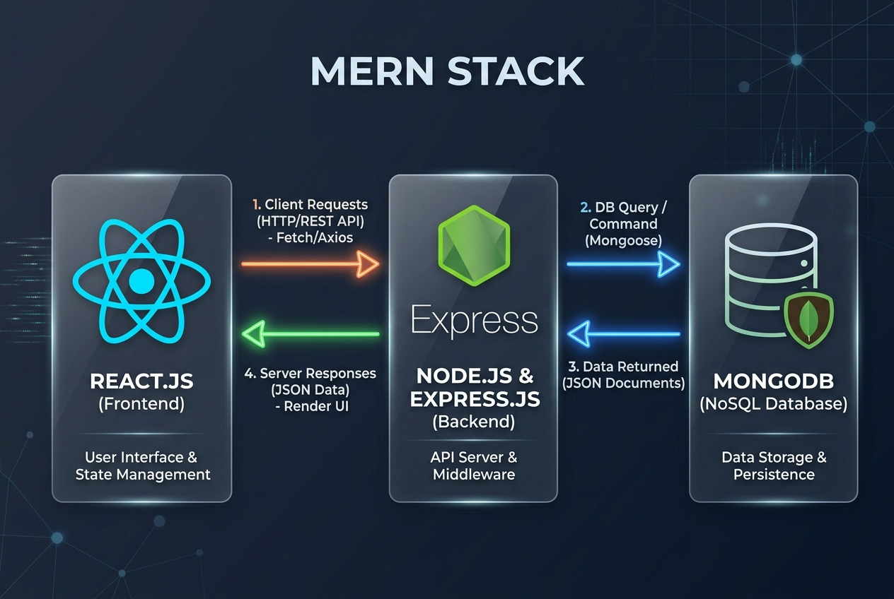

A comprehensive multimedia presentation of the MongoDB, Express.js, React.js, and Node.js workflow.
Watch the architectural diagram paired with voiceover explanation.
High-resolution workflow chart illustrating MERN stack interactions.

Listen to a spoken narration detailing the MERN stack data flow.